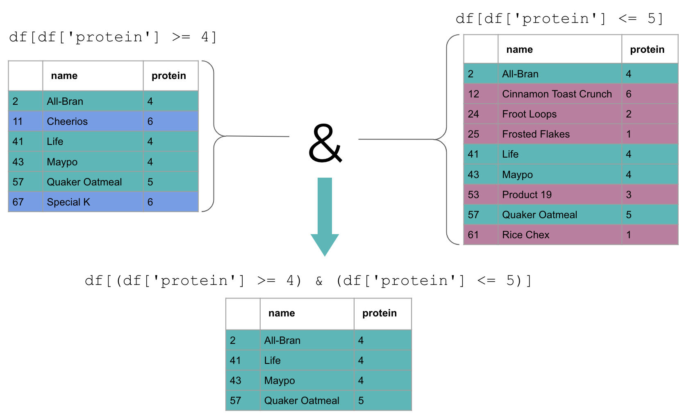
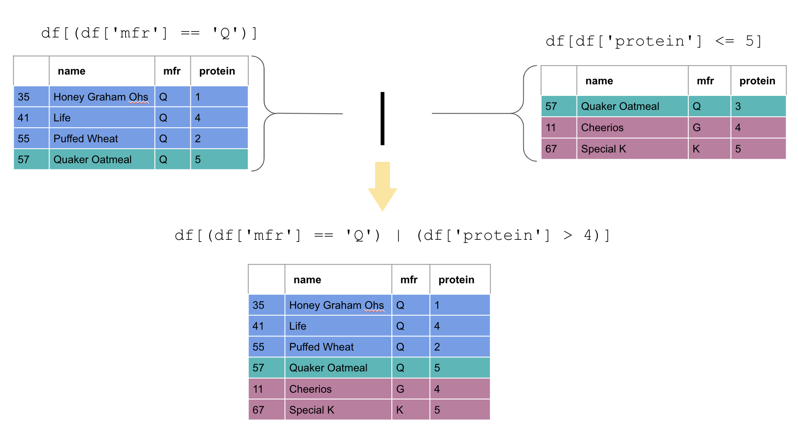

Data Filtering¶
Watch it
See the accompanied youtube video at the link here.
import pandas as pd
import numpy as np
pd.set_option('display.width', 350)
np.set_printoptions(linewidth=400)
pd.set_option('display.max_columns', 20)
pd.set_option('display.max_rows', 20)
Filtering is probably one of the most frequent data manipulations you will do in data analysis.
Filtering is often used when we are either trying to rid the dataframe of unwanted rows or trying to analyze rows with a particular column value.
Let’s try to filter the cereal.csv dataset.
cereal = pd.read_csv('cereal.csv')
cereal.head()
| name | mfr | type | calories | protein | fat | sodium | fiber | carbo | sugars | potass | vitamins | shelf | weight | cups | rating | |
|---|---|---|---|---|---|---|---|---|---|---|---|---|---|---|---|---|
| 0 | 100% Bran | N | Cold | 70 | 4 | 1 | 130 | 10.0 | 5.0 | 6 | 280 | 25 | 3 | 1.0 | 0.33 | 68.402973 |
| 1 | 100% Natural Bran | Q | Cold | 120 | 3 | 5 | 15 | 2.0 | 8.0 | 8 | 135 | 0 | 3 | 1.0 | 1.00 | 33.983679 |
| 2 | All-Bran | K | Cold | 70 | 4 | 1 | 260 | 9.0 | 7.0 | 5 | 320 | 25 | 3 | 1.0 | 0.33 | 59.425505 |
| 3 | All-Bran with Extra Fiber | K | Cold | 50 | 4 | 0 | 140 | 14.0 | 8.0 | 0 | 330 | 25 | 3 | 1.0 | 0.50 | 93.704912 |
| 4 | Almond Delight | R | Cold | 110 | 2 | 2 | 200 | 1.0 | 14.0 | 8 | 1 | 25 | 3 | 1.0 | 0.75 | 34.384843 |
Conditions¶
Suppose you are trying to find the information for cereals with a protein content greater than 4g per serving.
Our first instinct would be to write code that looks somewhat like this.
cereal['protein'] > 4
0 False
1 False
2 False
3 False
4 False
...
72 False
73 False
74 False
75 False
76 False
Name: protein, Length: 77, dtype: bool
This can be translated as
“From the protein column in the dataframe cereal, which have values
greater than 4?”
The output shows all the index labels and a column with True or
False values depending on if the row meets the condition. Cereals with
True have a protein content greater than 4 and False if they do not.
But we want a dataframe with all the information that only contains the rows with protein above 4.
How can this be achieved?
We can do this by indexing into our cereal dataframe using this column
of True/False values. The result is a smaller dataframe that only
contains the rows corresponding to the True values.
cereal[cereal['protein'] > 4]
| name | mfr | type | calories | protein | fat | sodium | fiber | carbo | sugars | potass | vitamins | shelf | weight | cups | rating | |
|---|---|---|---|---|---|---|---|---|---|---|---|---|---|---|---|---|
| 11 | Cheerios | G | Cold | 110 | 6 | 2 | 290 | 2.0 | 17.0 | 1 | 105 | 25 | 1 | 1.0 | 1.25 | 50.764999 |
| 57 | Quaker Oatmeal | Q | Hot | 100 | 5 | 2 | 0 | 2.7 | 1.0 | 1 | 110 | 0 | 1 | 1.0 | 0.67 | 50.828392 |
| 67 | Special K | K | Cold | 110 | 6 | 0 | 230 | 1.0 | 16.0 | 3 | 55 | 25 | 1 | 1.0 | 1.00 | 53.131324 |
This code can be translated to:
Select the rows from the cereal dataframe that, according to the
cereal dataframe, have a protein values greater than 4.
We can see from the output that only the rows meeting the condition are displayed.
By the way, it is a common pattern that we’re using the same dataframe
twice, namely cereal, but it’s not strictly required by pandas.
We can do this with equalities as well.
cereal[cereal['protein'] == 4]
| name | mfr | type | calories | protein | fat | sodium | fiber | carbo | sugars | potass | vitamins | shelf | weight | cups | rating | |
|---|---|---|---|---|---|---|---|---|---|---|---|---|---|---|---|---|
| 0 | 100% Bran | N | Cold | 70 | 4 | 1 | 130 | 10.0 | 5.0 | 6 | 280 | 25 | 3 | 1.0 | 0.33 | 68.402973 |
| 2 | All-Bran | K | Cold | 70 | 4 | 1 | 260 | 9.0 | 7.0 | 5 | 320 | 25 | 3 | 1.0 | 0.33 | 59.425505 |
| 3 | All-Bran with Extra Fiber | K | Cold | 50 | 4 | 0 | 140 | 14.0 | 8.0 | 0 | 330 | 25 | 3 | 1.0 | 0.50 | 93.704912 |
| 41 | Life | Q | Cold | 100 | 4 | 2 | 150 | 2.0 | 12.0 | 6 | 95 | 25 | 2 | 1.0 | 0.67 | 45.328074 |
| 43 | Maypo | A | Hot | 100 | 4 | 1 | 0 | 0.0 | 16.0 | 3 | 95 | 25 | 2 | 1.0 | 1.00 | 54.850917 |
| 44 | Muesli Raisins; Dates; & Almonds | R | Cold | 150 | 4 | 3 | 95 | 3.0 | 16.0 | 11 | 170 | 25 | 3 | 1.0 | 1.00 | 37.136863 |
| 45 | Muesli Raisins; Peaches; & Pecans | R | Cold | 150 | 4 | 3 | 150 | 3.0 | 16.0 | 11 | 170 | 25 | 3 | 1.0 | 1.00 | 34.139765 |
| 56 | Quaker Oat Squares | Q | Cold | 100 | 4 | 1 | 135 | 2.0 | 14.0 | 6 | 110 | 25 | 3 | 1.0 | 0.50 | 49.511874 |
Now we get all the cereals with a protein content of exactly 4g per serving.
The key point to remember here is that we use two equal signs.
In Python, a single = is used as an assignment operator. We are
setting something to equal something else.
The double equal sign operator is used for comparison. We check if certain values are equivalent to one another.
By the way, these conventions were set a long time ago when people made
the early programming languages. In hindsight, maybe something like =?
would have been more clear, but the double equal sign for comparison is
now a standard.
We can filter categorical columns too. In this example, we only want cereals from the manufacturer “Q” (For Quaker):
Here, we are using the double equal sign operator that we saw in the last slide.
cereal[cereal['mfr'] == 'Q']
| name | mfr | type | calories | protein | fat | sodium | fiber | carbo | sugars | potass | vitamins | shelf | weight | cups | rating | |
|---|---|---|---|---|---|---|---|---|---|---|---|---|---|---|---|---|
| 1 | 100% Natural Bran | Q | Cold | 120 | 3 | 5 | 15 | 2.0 | 8.0 | 8 | 135 | 0 | 3 | 1.0 | 1.00 | 33.983679 |
| 10 | Cap'n'Crunch | Q | Cold | 120 | 1 | 2 | 220 | 0.0 | 12.0 | 12 | 35 | 25 | 2 | 1.0 | 0.75 | 18.042851 |
| 35 | Honey Graham Ohs | Q | Cold | 120 | 1 | 2 | 220 | 1.0 | 12.0 | 11 | 45 | 25 | 2 | 1.0 | 1.00 | 21.871292 |
| 41 | Life | Q | Cold | 100 | 4 | 2 | 150 | 2.0 | 12.0 | 6 | 95 | 25 | 2 | 1.0 | 0.67 | 45.328074 |
| 54 | Puffed Rice | Q | Cold | 50 | 1 | 0 | 0 | 0.0 | 13.0 | 0 | 15 | 0 | 3 | 0.5 | 1.00 | 60.756112 |
| 55 | Puffed Wheat | Q | Cold | 50 | 2 | 0 | 0 | 1.0 | 10.0 | 0 | 50 | 0 | 3 | 0.5 | 1.00 | 63.005645 |
| 56 | Quaker Oat Squares | Q | Cold | 100 | 4 | 1 | 135 | 2.0 | 14.0 | 6 | 110 | 25 | 3 | 1.0 | 0.50 | 49.511874 |
| 57 | Quaker Oatmeal | Q | Hot | 100 | 5 | 2 | 0 | 2.7 | 1.0 | 1 | 110 | 0 | 1 | 1.0 | 0.67 | 50.828392 |
Multiple Condition Filtering - “and”¶
We now know how to filter on one condition but how do we filter if we have many?
Perhaps we only want cereals with protein content between 4 to 5 grams?
To find the cereals that meet protein contents greater or equal to 4, we use the code shown here.
cereal[cereal['protein'] >= 4]
| name | mfr | type | calories | protein | fat | sodium | fiber | carbo | sugars | potass | vitamins | shelf | weight | cups | rating | |
|---|---|---|---|---|---|---|---|---|---|---|---|---|---|---|---|---|
| 0 | 100% Bran | N | Cold | 70 | 4 | 1 | 130 | 10.0 | 5.0 | 6 | 280 | 25 | 3 | 1.0 | 0.33 | 68.402973 |
| 2 | All-Bran | K | Cold | 70 | 4 | 1 | 260 | 9.0 | 7.0 | 5 | 320 | 25 | 3 | 1.0 | 0.33 | 59.425505 |
| 3 | All-Bran with Extra Fiber | K | Cold | 50 | 4 | 0 | 140 | 14.0 | 8.0 | 0 | 330 | 25 | 3 | 1.0 | 0.50 | 93.704912 |
| 11 | Cheerios | G | Cold | 110 | 6 | 2 | 290 | 2.0 | 17.0 | 1 | 105 | 25 | 1 | 1.0 | 1.25 | 50.764999 |
| 41 | Life | Q | Cold | 100 | 4 | 2 | 150 | 2.0 | 12.0 | 6 | 95 | 25 | 2 | 1.0 | 0.67 | 45.328074 |
| 43 | Maypo | A | Hot | 100 | 4 | 1 | 0 | 0.0 | 16.0 | 3 | 95 | 25 | 2 | 1.0 | 1.00 | 54.850917 |
| 44 | Muesli Raisins; Dates; & Almonds | R | Cold | 150 | 4 | 3 | 95 | 3.0 | 16.0 | 11 | 170 | 25 | 3 | 1.0 | 1.00 | 37.136863 |
| 45 | Muesli Raisins; Peaches; & Pecans | R | Cold | 150 | 4 | 3 | 150 | 3.0 | 16.0 | 11 | 170 | 25 | 3 | 1.0 | 1.00 | 34.139765 |
| 56 | Quaker Oat Squares | Q | Cold | 100 | 4 | 1 | 135 | 2.0 | 14.0 | 6 | 110 | 25 | 3 | 1.0 | 0.50 | 49.511874 |
| 57 | Quaker Oatmeal | Q | Hot | 100 | 5 | 2 | 0 | 2.7 | 1.0 | 1 | 110 | 0 | 1 | 1.0 | 0.67 | 50.828392 |
| 67 | Special K | K | Cold | 110 | 6 | 0 | 230 | 1.0 | 16.0 | 3 | 55 | 25 | 1 | 1.0 | 1.00 | 53.131324 |
And the cereals that meet the condition of protein content below or equal to 5 would be obtained as shown here.
cereal[cereal['protein'] <= 5]
| name | mfr | type | calories | protein | fat | sodium | fiber | carbo | sugars | potass | vitamins | shelf | weight | cups | rating | |
|---|---|---|---|---|---|---|---|---|---|---|---|---|---|---|---|---|
| 0 | 100% Bran | N | Cold | 70 | 4 | 1 | 130 | 10.0 | 5.0 | 6 | 280 | 25 | 3 | 1.0 | 0.33 | 68.402973 |
| 1 | 100% Natural Bran | Q | Cold | 120 | 3 | 5 | 15 | 2.0 | 8.0 | 8 | 135 | 0 | 3 | 1.0 | 1.00 | 33.983679 |
| 2 | All-Bran | K | Cold | 70 | 4 | 1 | 260 | 9.0 | 7.0 | 5 | 320 | 25 | 3 | 1.0 | 0.33 | 59.425505 |
| 3 | All-Bran with Extra Fiber | K | Cold | 50 | 4 | 0 | 140 | 14.0 | 8.0 | 0 | 330 | 25 | 3 | 1.0 | 0.50 | 93.704912 |
| 4 | Almond Delight | R | Cold | 110 | 2 | 2 | 200 | 1.0 | 14.0 | 8 | 1 | 25 | 3 | 1.0 | 0.75 | 34.384843 |
| ... | ... | ... | ... | ... | ... | ... | ... | ... | ... | ... | ... | ... | ... | ... | ... | ... |
| 72 | Triples | G | Cold | 110 | 2 | 1 | 250 | 0.0 | 21.0 | 3 | 60 | 25 | 3 | 1.0 | 0.75 | 39.106174 |
| 73 | Trix | G | Cold | 110 | 1 | 1 | 140 | 0.0 | 13.0 | 12 | 25 | 25 | 2 | 1.0 | 1.00 | 27.753301 |
| 74 | Wheat Chex | R | Cold | 100 | 3 | 1 | 230 | 3.0 | 17.0 | 3 | 115 | 25 | 1 | 1.0 | 0.67 | 49.787445 |
| 75 | Wheaties | G | Cold | 100 | 3 | 1 | 200 | 3.0 | 17.0 | 3 | 110 | 25 | 1 | 1.0 | 1.00 | 51.592193 |
| 76 | Wheaties Honey Gold | G | Cold | 110 | 2 | 1 | 200 | 1.0 | 16.0 | 8 | 60 | 25 | 1 | 1.0 | 0.75 | 36.187559 |
75 rows × 16 columns
We can combine the two conditions using the & operator. This allows us
to obtain cereals that meet both conditions.
cereal[cereal['protein'] >= 4]
| name | mfr | type | calories | protein | fat | sodium | fiber | carbo | sugars | potass | vitamins | shelf | weight | cups | rating | |
|---|---|---|---|---|---|---|---|---|---|---|---|---|---|---|---|---|
| 0 | 100% Bran | N | Cold | 70 | 4 | 1 | 130 | 10.0 | 5.0 | 6 | 280 | 25 | 3 | 1.0 | 0.33 | 68.402973 |
| 2 | All-Bran | K | Cold | 70 | 4 | 1 | 260 | 9.0 | 7.0 | 5 | 320 | 25 | 3 | 1.0 | 0.33 | 59.425505 |
| 3 | All-Bran with Extra Fiber | K | Cold | 50 | 4 | 0 | 140 | 14.0 | 8.0 | 0 | 330 | 25 | 3 | 1.0 | 0.50 | 93.704912 |
| 11 | Cheerios | G | Cold | 110 | 6 | 2 | 290 | 2.0 | 17.0 | 1 | 105 | 25 | 1 | 1.0 | 1.25 | 50.764999 |
| 41 | Life | Q | Cold | 100 | 4 | 2 | 150 | 2.0 | 12.0 | 6 | 95 | 25 | 2 | 1.0 | 0.67 | 45.328074 |
| 43 | Maypo | A | Hot | 100 | 4 | 1 | 0 | 0.0 | 16.0 | 3 | 95 | 25 | 2 | 1.0 | 1.00 | 54.850917 |
| 44 | Muesli Raisins; Dates; & Almonds | R | Cold | 150 | 4 | 3 | 95 | 3.0 | 16.0 | 11 | 170 | 25 | 3 | 1.0 | 1.00 | 37.136863 |
| 45 | Muesli Raisins; Peaches; & Pecans | R | Cold | 150 | 4 | 3 | 150 | 3.0 | 16.0 | 11 | 170 | 25 | 3 | 1.0 | 1.00 | 34.139765 |
| 56 | Quaker Oat Squares | Q | Cold | 100 | 4 | 1 | 135 | 2.0 | 14.0 | 6 | 110 | 25 | 3 | 1.0 | 0.50 | 49.511874 |
| 57 | Quaker Oatmeal | Q | Hot | 100 | 5 | 2 | 0 | 2.7 | 1.0 | 1 | 110 | 0 | 1 | 1.0 | 0.67 | 50.828392 |
| 67 | Special K | K | Cold | 110 | 6 | 0 | 230 | 1.0 | 16.0 | 3 | 55 | 25 | 1 | 1.0 | 1.00 | 53.131324 |
cereal[cereal['protein'] <= 5]
| name | mfr | type | calories | protein | fat | sodium | fiber | carbo | sugars | potass | vitamins | shelf | weight | cups | rating | |
|---|---|---|---|---|---|---|---|---|---|---|---|---|---|---|---|---|
| 0 | 100% Bran | N | Cold | 70 | 4 | 1 | 130 | 10.0 | 5.0 | 6 | 280 | 25 | 3 | 1.0 | 0.33 | 68.402973 |
| 1 | 100% Natural Bran | Q | Cold | 120 | 3 | 5 | 15 | 2.0 | 8.0 | 8 | 135 | 0 | 3 | 1.0 | 1.00 | 33.983679 |
| 2 | All-Bran | K | Cold | 70 | 4 | 1 | 260 | 9.0 | 7.0 | 5 | 320 | 25 | 3 | 1.0 | 0.33 | 59.425505 |
| 3 | All-Bran with Extra Fiber | K | Cold | 50 | 4 | 0 | 140 | 14.0 | 8.0 | 0 | 330 | 25 | 3 | 1.0 | 0.50 | 93.704912 |
| 4 | Almond Delight | R | Cold | 110 | 2 | 2 | 200 | 1.0 | 14.0 | 8 | 1 | 25 | 3 | 1.0 | 0.75 | 34.384843 |
| ... | ... | ... | ... | ... | ... | ... | ... | ... | ... | ... | ... | ... | ... | ... | ... | ... |
| 72 | Triples | G | Cold | 110 | 2 | 1 | 250 | 0.0 | 21.0 | 3 | 60 | 25 | 3 | 1.0 | 0.75 | 39.106174 |
| 73 | Trix | G | Cold | 110 | 1 | 1 | 140 | 0.0 | 13.0 | 12 | 25 | 25 | 2 | 1.0 | 1.00 | 27.753301 |
| 74 | Wheat Chex | R | Cold | 100 | 3 | 1 | 230 | 3.0 | 17.0 | 3 | 115 | 25 | 1 | 1.0 | 0.67 | 49.787445 |
| 75 | Wheaties | G | Cold | 100 | 3 | 1 | 200 | 3.0 | 17.0 | 3 | 110 | 25 | 1 | 1.0 | 1.00 | 51.592193 |
| 76 | Wheaties Honey Gold | G | Cold | 110 | 2 | 1 | 200 | 1.0 | 16.0 | 8 | 60 | 25 | 1 | 1.0 | 0.75 | 36.187559 |
75 rows × 16 columns
cereal[(cereal['protein'] >= 4) & (cereal['protein'] <= 5)]
| name | mfr | type | calories | protein | fat | sodium | fiber | carbo | sugars | potass | vitamins | shelf | weight | cups | rating | |
|---|---|---|---|---|---|---|---|---|---|---|---|---|---|---|---|---|
| 0 | 100% Bran | N | Cold | 70 | 4 | 1 | 130 | 10.0 | 5.0 | 6 | 280 | 25 | 3 | 1.0 | 0.33 | 68.402973 |
| 2 | All-Bran | K | Cold | 70 | 4 | 1 | 260 | 9.0 | 7.0 | 5 | 320 | 25 | 3 | 1.0 | 0.33 | 59.425505 |
| 3 | All-Bran with Extra Fiber | K | Cold | 50 | 4 | 0 | 140 | 14.0 | 8.0 | 0 | 330 | 25 | 3 | 1.0 | 0.50 | 93.704912 |
| 41 | Life | Q | Cold | 100 | 4 | 2 | 150 | 2.0 | 12.0 | 6 | 95 | 25 | 2 | 1.0 | 0.67 | 45.328074 |
| 43 | Maypo | A | Hot | 100 | 4 | 1 | 0 | 0.0 | 16.0 | 3 | 95 | 25 | 2 | 1.0 | 1.00 | 54.850917 |
| 44 | Muesli Raisins; Dates; & Almonds | R | Cold | 150 | 4 | 3 | 95 | 3.0 | 16.0 | 11 | 170 | 25 | 3 | 1.0 | 1.00 | 37.136863 |
| 45 | Muesli Raisins; Peaches; & Pecans | R | Cold | 150 | 4 | 3 | 150 | 3.0 | 16.0 | 11 | 170 | 25 | 3 | 1.0 | 1.00 | 34.139765 |
| 56 | Quaker Oat Squares | Q | Cold | 100 | 4 | 1 | 135 | 2.0 | 14.0 | 6 | 110 | 25 | 3 | 1.0 | 0.50 | 49.511874 |
| 57 | Quaker Oatmeal | Q | Hot | 100 | 5 | 2 | 0 | 2.7 | 1.0 | 1 | 110 | 0 | 1 | 1.0 | 0.67 | 50.828392 |
The & indicates “and”. This means that both conditions must hold for a
row to be included in the new dataframe.
Each condition is wrapped with parentheses to keep them clearly separated.
Only rows present in both dataframes will be selected.
Next, we will look at a case where we filter on two different columns.
Let’s say we only want cereals from the Quaker manufacturer, with a protein content greater than 4.
The same coding syntax can be applied to two different column conditions.
cereal[(cereal['mfr'] == 'Q') & (cereal['protein'] > 4)]
| name | mfr | type | calories | protein | fat | sodium | fiber | carbo | sugars | potass | vitamins | shelf | weight | cups | rating | |
|---|---|---|---|---|---|---|---|---|---|---|---|---|---|---|---|---|
| 57 | Quaker Oatmeal | Q | Hot | 100 | 5 | 2 | 0 | 2.7 | 1.0 | 1 | 110 | 0 | 1 | 1.0 | 0.67 | 50.828392 |
Multiple Condition Filtering - “or”¶
Suppose that we are interested in cereals that either are made from the Quaker manufacturer OR a protein content above 4.
For a row to be included in the output, we only require one or the other condition to hold.
Instead of using the & symbol, we use | which is called the “pipe
operator”. This means “or” in the Python programming language (and many
other languages).
cereal[(cereal['mfr'] == 'Q') | (cereal['protein'] > 4)]
| name | mfr | type | calories | protein | fat | sodium | fiber | carbo | sugars | potass | vitamins | shelf | weight | cups | rating | |
|---|---|---|---|---|---|---|---|---|---|---|---|---|---|---|---|---|
| 1 | 100% Natural Bran | Q | Cold | 120 | 3 | 5 | 15 | 2.0 | 8.0 | 8 | 135 | 0 | 3 | 1.0 | 1.00 | 33.983679 |
| 10 | Cap'n'Crunch | Q | Cold | 120 | 1 | 2 | 220 | 0.0 | 12.0 | 12 | 35 | 25 | 2 | 1.0 | 0.75 | 18.042851 |
| 11 | Cheerios | G | Cold | 110 | 6 | 2 | 290 | 2.0 | 17.0 | 1 | 105 | 25 | 1 | 1.0 | 1.25 | 50.764999 |
| 35 | Honey Graham Ohs | Q | Cold | 120 | 1 | 2 | 220 | 1.0 | 12.0 | 11 | 45 | 25 | 2 | 1.0 | 1.00 | 21.871292 |
| 41 | Life | Q | Cold | 100 | 4 | 2 | 150 | 2.0 | 12.0 | 6 | 95 | 25 | 2 | 1.0 | 0.67 | 45.328074 |
| 54 | Puffed Rice | Q | Cold | 50 | 1 | 0 | 0 | 0.0 | 13.0 | 0 | 15 | 0 | 3 | 0.5 | 1.00 | 60.756112 |
| 55 | Puffed Wheat | Q | Cold | 50 | 2 | 0 | 0 | 1.0 | 10.0 | 0 | 50 | 0 | 3 | 0.5 | 1.00 | 63.005645 |
| 56 | Quaker Oat Squares | Q | Cold | 100 | 4 | 1 | 135 | 2.0 | 14.0 | 6 | 110 | 25 | 3 | 1.0 | 0.50 | 49.511874 |
| 57 | Quaker Oatmeal | Q | Hot | 100 | 5 | 2 | 0 | 2.7 | 1.0 | 1 | 110 | 0 | 1 | 1.0 | 0.67 | 50.828392 |
| 67 | Special K | K | Cold | 110 | 6 | 0 | 230 | 1.0 | 16.0 | 3 | 55 | 25 | 1 | 1.0 | 1.00 | 53.131324 |
When we filter using “or” this time, it resulted in 10 cereals that met either of the conditions.
When we filtered using “and”, only 1 cereal met both conditions.
Tilde¶
We saw that when we filter the conditions are expressed with an
underlying column with True or False values indicating if the
condition has been met in each row of the dataframe.
But what if I wanted the rows that were the complement (or opposite) of this?
cereal['protein'] > 4
0 False
1 False
2 False
3 False
4 False
...
72 False
73 False
74 False
75 False
76 False
Name: protein, Length: 77, dtype: bool
(cereal['protein'] > 4).head()
0 False
1 False
2 False
3 False
4 False
Name: protein, dtype: bool
The opposite of cereal['protein'] > 4 is cereal['protein'] <= 4, so
that one isn’t too tricky. But sometimes taking the opposite is not so
straightforward. This is where the ~ (“tilde”) operator can be
helpful.
Tilde converts all the True values to False and all the False
values, to True.
(~(cereal['protein'] > 4)).head()
0 True
1 True
2 True
3 True
4 True
Name: protein, dtype: bool
Tilde (~) gives us the ability to return the complement of the code
following it.
We can obtain the complete dataframe by putting the entire condition within our square brackets like we did before.
What we have here, is taking the rows where the protein content is not greater than four.
cereal[~(cereal['protein'] > 4)]
| name | mfr | type | calories | protein | fat | sodium | fiber | carbo | sugars | potass | vitamins | shelf | weight | cups | rating | |
|---|---|---|---|---|---|---|---|---|---|---|---|---|---|---|---|---|
| 0 | 100% Bran | N | Cold | 70 | 4 | 1 | 130 | 10.0 | 5.0 | 6 | 280 | 25 | 3 | 1.0 | 0.33 | 68.402973 |
| 1 | 100% Natural Bran | Q | Cold | 120 | 3 | 5 | 15 | 2.0 | 8.0 | 8 | 135 | 0 | 3 | 1.0 | 1.00 | 33.983679 |
| 2 | All-Bran | K | Cold | 70 | 4 | 1 | 260 | 9.0 | 7.0 | 5 | 320 | 25 | 3 | 1.0 | 0.33 | 59.425505 |
| 3 | All-Bran with Extra Fiber | K | Cold | 50 | 4 | 0 | 140 | 14.0 | 8.0 | 0 | 330 | 25 | 3 | 1.0 | 0.50 | 93.704912 |
| 4 | Almond Delight | R | Cold | 110 | 2 | 2 | 200 | 1.0 | 14.0 | 8 | 1 | 25 | 3 | 1.0 | 0.75 | 34.384843 |
| ... | ... | ... | ... | ... | ... | ... | ... | ... | ... | ... | ... | ... | ... | ... | ... | ... |
| 72 | Triples | G | Cold | 110 | 2 | 1 | 250 | 0.0 | 21.0 | 3 | 60 | 25 | 3 | 1.0 | 0.75 | 39.106174 |
| 73 | Trix | G | Cold | 110 | 1 | 1 | 140 | 0.0 | 13.0 | 12 | 25 | 25 | 2 | 1.0 | 1.00 | 27.753301 |
| 74 | Wheat Chex | R | Cold | 100 | 3 | 1 | 230 | 3.0 | 17.0 | 3 | 115 | 25 | 1 | 1.0 | 0.67 | 49.787445 |
| 75 | Wheaties | G | Cold | 100 | 3 | 1 | 200 | 3.0 | 17.0 | 3 | 110 | 25 | 1 | 1.0 | 1.00 | 51.592193 |
| 76 | Wheaties Honey Gold | G | Cold | 110 | 2 | 1 | 200 | 1.0 | 16.0 | 8 | 60 | 25 | 1 | 1.0 | 0.75 | 36.187559 |
74 rows × 16 columns
This gives us more versatility when filtering, especially when we want the inverse of more complicated conditions and verbs (you’ll see this in Module 3).
Let’s apply what we learned!
1. If the output of
df['location'] == 'Canada'
is
[ True, False, False, True]
What would be the output of
~(df['location'] == 'Canada')
a) [True, False, False, True]
b) [False, False, False, False]
c) [True, True, True, True]
d) [False, True, True, False]
Solutions!
d)
[False, True, True, False]